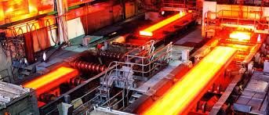

Industries of Telangana
Electrical Industries
These are ISO 9001: 2008, EMS: 14001:2004 certified company, manufacturing various Electronic products under the brand name "SILICON". The various Power Electronic products are Adaptors, Power supplies, LED Drivers, IP65 SMPS PowerSupplies/LED Drivers (Waterproof) and Electronics Manufacturing Services.
Occupational hazards
- Contact with live wires resulting in electric shock and burns,
- Fires due to faulty wiring,
- Exposed electrical parts,
- Ignition of fires or explosions due to electrical contact with potentially
flammable or explosive materials,
Preventative Steps
- Inspect wiring of equipment before each use.
- Use safe work practices every time electrical equipment is used.
- Limit the use of extension cords. Use only for temporary operations
and then only for short periods of time. - Place exposed electrical conductors behind shields.
Iron Industries
The Company’s main business is manufacturing of Sponge Iron using Iron-Ore and Coal as the Raw Materials. It has two Sponge Iron Manufacturing Plants of which one is located at Adityapur Industrial Area, The Sponge Iron is used as input by the Steel Melting Shops (Induction Furnaces) to produce M. S. Ingots/M. S. Billets which are thereafter re-rolled by the Rolling Mills to produce end steel products like TMT Rods/Bars, Plain Rounds, Angles, Flats, Channels, Girders, etc.
Occupational hazards
- Those that can be eliminated – Leakages of gases, dust in motor-houses,
pollution through power plant chimneys, blazing of coke ovens, narrow
work spaces etc. - Those that can be controlled – Noise level in pump houses and turbine-halls,
heat level in cast- houses, dust-level in sintering plant, gas concentration
at working levels, etc. - Those against which protective measures need to be taken – i.e., those that
can neither be controlled nor eliminated – e.g., liquid hot metal (heat and glare),
noise in rolling mills, etc.

Preventative Steps
Identification: One basic approach for any hazard control has been that in the first place, the hazard to be controlled has to be identified, Training, Maintenance Culture, Chemical and Environmental Hazards,Noise, Heat, Fire Safety, Ergonomics